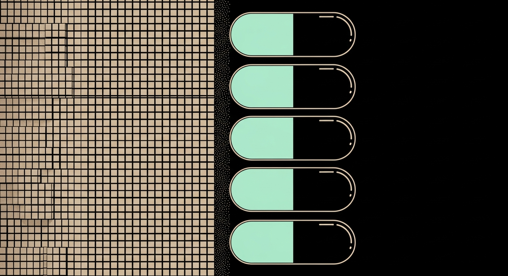
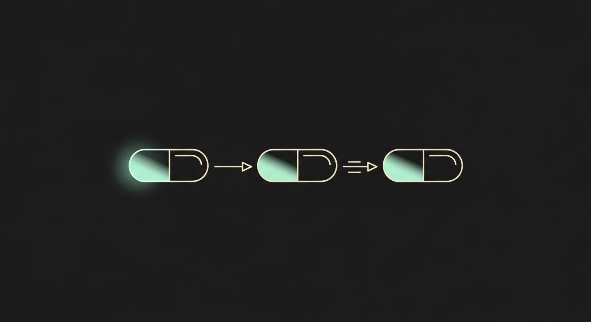

The composable subsystem layer for AI software engineering.

Every coding agent in production today re-derives architecture from raw source on every task. Context windows overflow, contracts get re-invented, and integration work silently breaks.
The bottleneck isn't model capability. It's the absence of a unit AI can read, compose and verify.
A capsule is a bounded software subsystem that is self‑describing, self‑verifying and addressable — small enough to fit in an agent's head, large enough to ship.
capsule: wolfctf/auth-ldap version: "0.2.1" purpose: "Identity for lab platform" interfaces: provides: [user.identity, session.token] requires: [ldap.endpoint, kv.store] invariants: - one user → one stable id - sessions expire ≤ 12h verify: - contract: tests/contract/* - integration: tests/int/* agent_brief: docs/agent.md # 1.8kb extension_points: [oauth, saml]
Unix piped text between programs.
Capsule pipes context between agents.

We are not building another agent. We are building the format the agents agree on.
Cursor, Claude Code, Codex, Devin, GitHub Copilot — each one wins or loses on its access to faithful, composable engineering context. Capsule is that supply.
Every layer of the AI software stack has a winner.
The subsystem layer is still empty.
capsule intends to fill it.